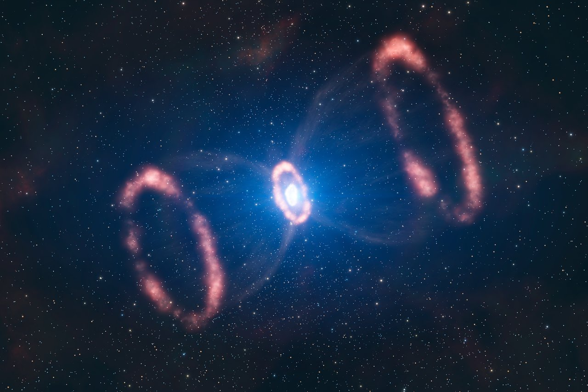
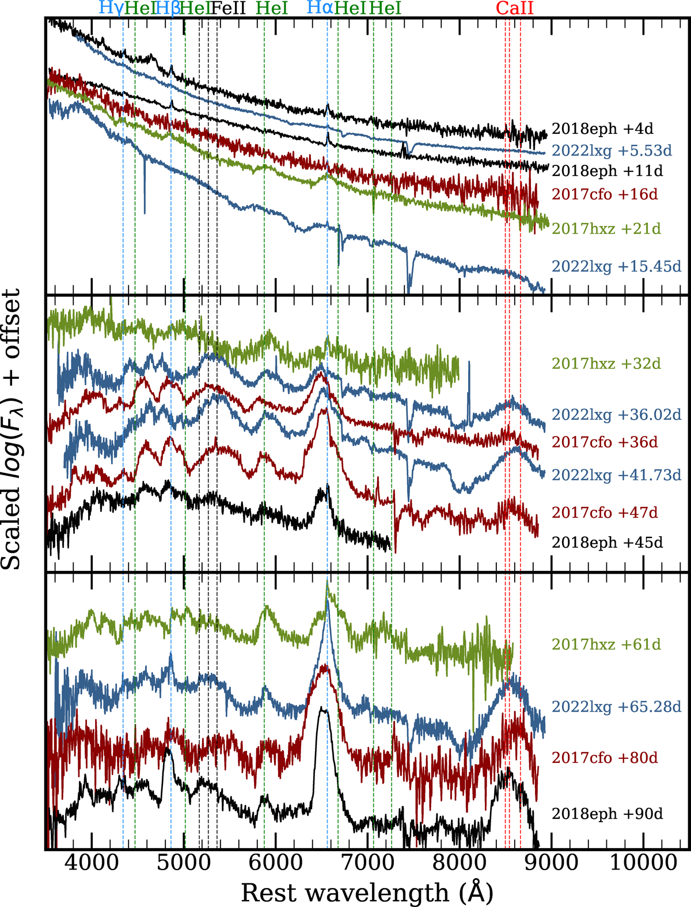
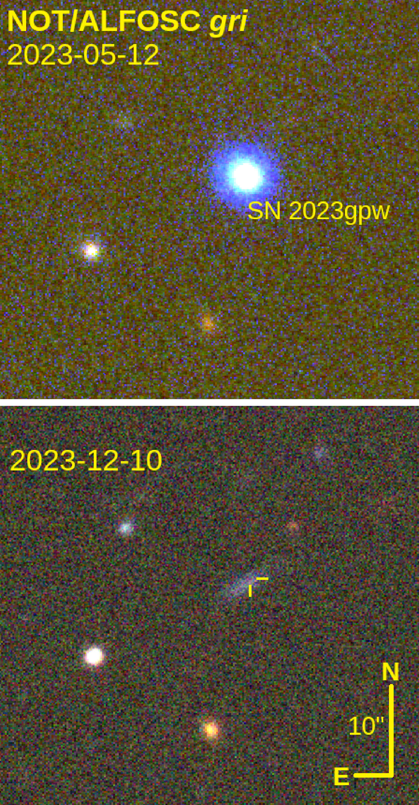

Supernovae
Supernovae are the explosive deaths of stars — either a massive star running out of fuel and collapsing catastrophically under its own gravity (core-collapse), or a white dwarf getting greedy, stealing mass from a companion until it tips over a critical limit and detonates entirely (thermonuclear). Either way, for a few weeks the explosion can outshine an entire galaxy, and the wreckage seeds the universe with the heavy elements that later end up in planets, and eventually, people.
Selected results
Luminous Supernovae
Supernovae (SN) happen when massive stars die in a runaway explosion, briefly outshining their entire galaxy. Superluminous supernovae (SLSN) are the extreme end of that spectrum — 10 to 100 times brighter than normal — and usually need some extra power source, like a magnetar or ejecta slamming into gas the star shed earlier, since radioactive decay alone can't make that much light. In between sits a rarer, less-studied group: luminous supernovae (LSNe), brighter than normal but nowhere near superluminous, generally explained by that same kind of interaction with surrounding gas, just on a smaller scale.
SN 2022lxg is a fast, bright (−19.4 mag) example of this middle group, discovered within about a day of explosion and rising to peak in just over a week. Early on it shows the telltale signature of a star crashing into gas it shed shortly before dying: short-lived, narrow emission lines from material getting flash-heated by the blast. As those fade, the spectrum starts looking like a partially-stripped Type IIb supernova, with broad hydrogen and helium features emerging from the expanding debris — then, about 35 days in, it flips again, and hydrogen emission narrows and starts dominating, more typical of an ongoing interacting supernova. Very little radioactive nickel was produced, too little to power the peak on its own, so the brightness has to come from that interaction instead. A mismatch between the velocity inferred from the glowing surface and the velocity measured in spectral lines, together with a real detection of polarized light, points to the explosion (or the gas around it) not being spherical. Putting it together, the favored picture is a binary star system where the doomed star transferred mass to a companion late in life, leaving behind a lopsided, disk-shaped shell of gas — and the changing viewing conditions through that disk as the ejecta expand explain the supernova's shifting spectral identity over time.

Superluminous Supernovae
SN 2023gpw is a hydrogen-rich superluminous supernova (SLSN II), peaking at −21.6 mag — genuinely in the superluminous regime this time, not just the "luminous" middle ground described before. Early spectra show the same kind of flash-ionisation lines from a nearby gas shell, which fade around peak, followed a few weeks later by a UV excess — another interaction signature. What makes it stand out is a light curve that abruptly drops by several magnitudes while the object was behind the Sun and unobservable, then never reappears — a steep decline never seen before in this class. The expanding fireball's surface shows no sign of slowing down throughout, while spectral lines suggest much lower velocities along our line of sight, again pointing to an aspherical explosion, reinforced by a marginal polarisation detection. The total energy radiated is high enough that a normal core-collapse mechanism paired with CSM interaction struggles to explain it, pushing the case toward some kind of extra central engine — either a magnetar or fallback accretion onto a newly formed black hole — working alongside the interaction.
Interestingly, I discovered this SN while looking for TDEs and got early spectroscopic and polarimetric data. When it became clear that this is a SLSN, T. Kangas led the follow-up that led to this great paper.
